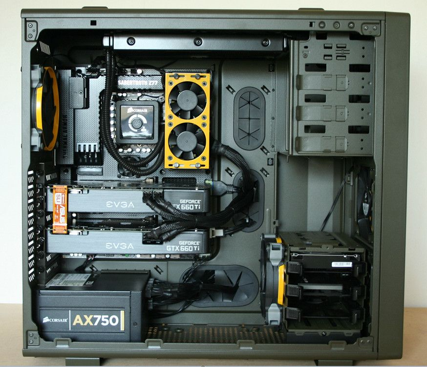

Qué debo hacer antes de empezar a limpiar mi PC
Desconectar la PC y retirarlo de la toma eléctrica
Nunca usar agua para limpiar el gabinete por dentro
Nunca retirar las teclas de una notebook
Recuerda que por lo general los componentes de la PC son sensibles, por lo tanto, necesitas ser cuidadoso para no afectar al funcionamiento de tu equipo.

Material necesario
Para realizar una limpieza completa necesitaremos:
Al menos tres paños diferentes (sin hilos)
Pincel de mango largo y cerdas blandas
Secador de cabellos con aire fríoasdasdasdasd
Lata de aire comprimido (si fuera posible)
Keenyerbhet Johann Garcia Martinez CI:31357441 SIDA1 G1 octubre 2021
©2021 Micron Technology, Inc. Todos los derechos reservados. La información, los productos y las especificaciones están sujetos a cambios sin previo aviso. Ni Crucial ni Micron Technology, Inc. se hacen responsables de omisiones o errores tipográficos o fotográficos. Micron, el logotipo de Micron, Crucial y el logotipo de Crucial son marcas registradas o marcas comerciales de Micron Technology, Inc. Todas las demás marcas comerciales o marcas comerciales registradas pertenecen a sus respectivos propietarios.


.jpg)